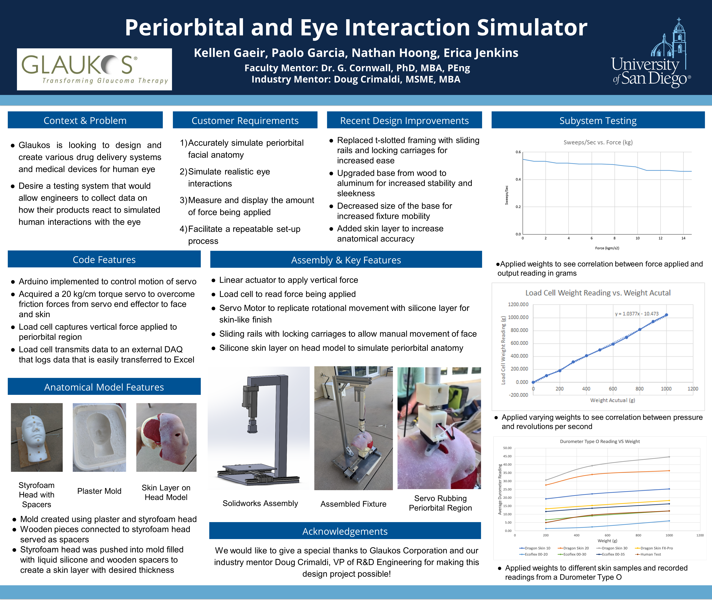
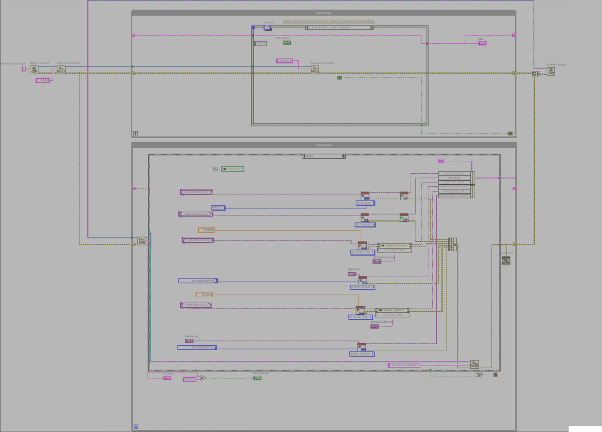
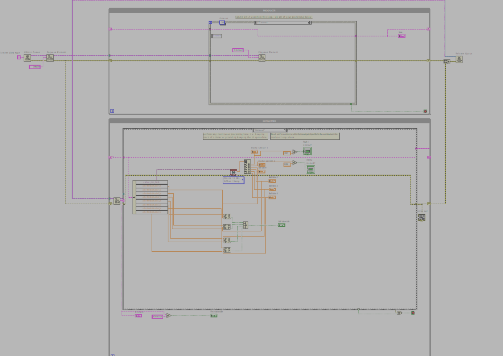
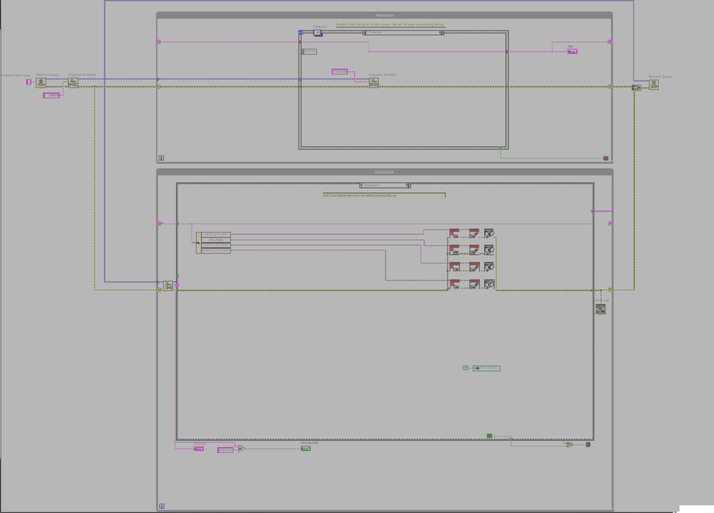
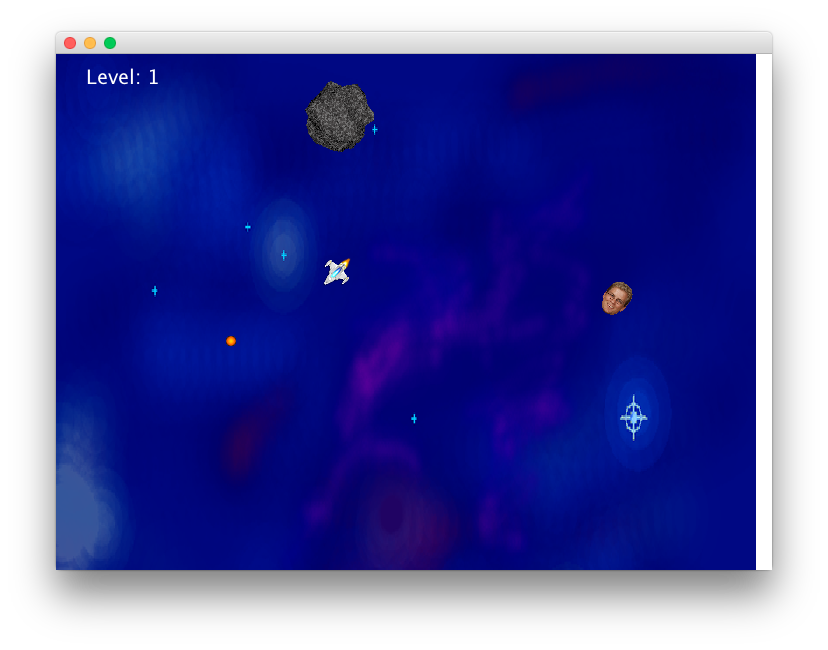

Glaukos, Senior Capstone Project

Objective: To develop a test fixture for Glaukos that will perform fatigue testing for the development of all new products.
Result A test fixture that has an accurate representation of human skin tissue, muscle, and bones, as well as appropriate anatomical features for the periorbital region.
The test fixture is able to produce a downward force to the periorbital region, produce a rotating motion that simulates human rubbing, and capture the forces that are applied to the periorbital region with an error of ± 1%.
Butterfly Valve
Throttle Body

Butterfly Valve 3/4 View

Butterfly Valve Top Down View
This is a projection from the top showing the pivot from the arm allowing for the intake of air.
Previous
Next
Objective: To design a throttle body, all components including fasteners, for a carbureated engine.
Result: The assembly shown is a design for a mechanical throttle body. The design enables a throttle cable from the pedal in the cabin to pivot the arm used to regulate the amount of air passing from the carburetor to the engine.

Shock Top 3/4 View

Shock Top Exploded View
This is a drawing of the exploded view of the shock top showing the pieces that make the assemby with a bill of materials.

Shock Top Drawing
The image attached is the exploded view shown as a drawing in Solidworks with a bill of materials included.

Shock Top Drawing
This image shows the design of each individual component.
Previous
Next
Objective: To create the top for a shock assembly, including all fasteners, that allows for the pivot of the shock and strut.
Results: A complete shock top assembly including a joint that pivots accounting for the motion incurred from steering so no bending occurs.
LabVIEW Code of
Automated Test Fixture

Electrical Schematic of Automated Test Fixture
The image depicts the electrical schematic required for the connections in the automated test fixture. The schematic was created in solidworks.

Initialization Sequence
The program was created using a producer-consumer loop in order to receive information from the cards in the cDAQ chassis and produce an output. The image depicts the initialization sequence in the program which enables all the motors in the pinch valves and the ball valves to be used.

Homing Sequence
The image attached is the homing sequence of the program. This sets the position of all motors to an open position.

Circuit Disconnect
This picture shows the creation of a disconnect in the limb of a patient circuit. This will move the ball valves in a position that will cause a disconnect in either the inspiratory limb or expiratory limb.

Circuit Occlusion
This picture shows the creation occlusion in the patient circuit. This program moves the motors of a pinch valve to a position relative to a slider.

Timeout Sequence
The image shows the timeout procedure that allows for the buttons on the UI to function. It will clear the loop once the loop is completed.

Shutdown Sequence
The image shows the shutdown procedure which ensures that all loops are closed.
Previous
Next
Objective: To create a program to run the automated test fixture using National Instrument cards in a cDAQ chassis.
Result: A program that initializes and homes all motors in the fixture, create disconnects, and occlusions in the patient circuit.

Asteroids game written in Java that includes multiple asteroids that split into smaller asteroids when shot. The game also contains different power ups that increase rate of fire, or a shield.
A video demonstrating the function of the Wobbler Engine. The Wobbler Engine was able to run at a minimum of 2.3 psi, leading to a result of 3rd out of 24 entries.
{kind=link}
{kind=link}